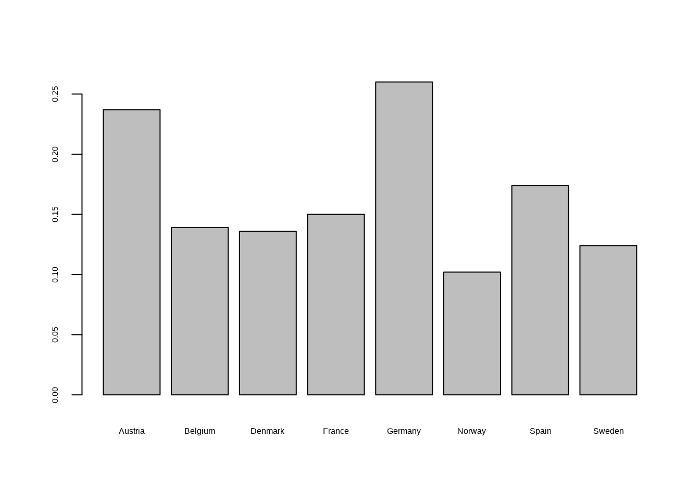

The death of a child is an enormous tragedy to its family and friends. The numbers across the globe add up to millions. From 56 million people who died for example in the year 2017, 5.4 millions were children under the age of 5, as reported by Max Roser (Roser 2019) in an interesting article on the website “Our world in Data” which we referred to in our introduction to this course. This is a number of enormous scale that never makes the headlines.
Max Roser (Roser 2019) on the website “our world in data”, we have encountered in the introduction, puts the scale very vividly into perspective. He writes:
“…The suffering and dying of children remains immense, yet these daily tragedies continue without receiving the attention this injustice deserves. A comparison of the tragedy of child deaths with those tragedies that do receive public attention puts it in perspective. A large jumbo jet can carry up to 620 passengers. The number of child deaths is that of 24 jumbo jet crashes, with only children on board, every single day. Single events – such as plane crashes – always make the headlines. Daily tragedies – even the worst ones like the deaths of thousands of children – never make the headlines.
In pre-industrial societies infant and child mortality were uniformly and cruelly high. They were a universal and frequent experience for families all over the world. In a scientific publication Anthony Volk and Jeremy Atkinson made an attempt to report mortality rates of infants and children in the past, collecting data from a wide range of geographic locations and cultures reaching far into the past (Antony and Jeremy 2013). The mortality rate is defined as the number of deaths per 1000 life births.1
1 Maybe this might be confusing for some of you because the usual understanding of a rate is the number of cases divided by the entire population exposed to a specific risk. To be precise the mortality rate is a probability of death derived from a life table and expressed as rate per 1000 live births. If you don’t know what these notions mean, don’t worry. We will learn later in the course about probability and also what life tables are. This footnote is just in case some of you might have wondered why the rate is expressed as cases per 1000. This is a convention of reporting mortality rates.
The authors find that in the entire sample about 27 % of children died in their first year of life and 46 % died before they reached adulthood. These rates are surprisingly similar across regions and cultures: Every forth newborn child died in the first year of life, every second child during its childhood. These are truely grim numbers.
The numbers started to improve, very gradually only with the onset of industrialization. Gapminder, the site we have already encountered in the introduction has collected and commented the available data back to 1800.2
2 See https://www.gapminder.org/data/documentation/gd002/
Let us have a look at them. For instance, if we go back to 1850, we have data only from Europe.
Code
# read data from data folder. The data are a csv version of the excel file from gapminder# sheet datainfant_mortality <-read.csv("data/infant_mortality/infant_mortality_data.csv")# table for 1860library(tidyverse)dat <- infant_mortality[infant_mortality$Year ==1860, ] %>%na.omit() rate_1860 <- dat[ , c("Country", "Count", "Mortality_Rate")]library(knitr)kable(rate_1860[order(-rate_1860$Mortality_Rate), ], digits =4, row.names =FALSE)
Infant mortality in some European countries in 1860
The table shows the counts of infant death during the first year in the year 1860 per 1000 life births. Before we deal with the information conveyed by these data, let us take the opportunity to discuss some terminology and technical terms that will be a focus of this chapter.
The data are shown here in a table. We have ordered the countries by the infant mortality rate, displaying the country with the highest rate first. The columns of the table are called variables. So the variables shown in this table are Country, Count and Mortality Rate. In the specific example shown here we have data that record whether an event has happened or not, in our case the death of an infant in his first year of life in a specific country during a specific year. Variables that can take only two values, are called binary data. Sets of binary data can be summarized by the number of times and the percentage of cases in which an event has occurred.
The basis for computing the percentages in our case are 1000 life births. So in the case of Norway in 1860 we can report the data by saying that among 1000 life births we had 102 infant deaths in the first year of life. Expressed as a rate this would be \(\frac{102}{1000}\), or \(0.102\), which amounts to \(10.2\) percent.3
3 Remember from school mathematics that a percentage is a number or ratio expresses as a fraction of 100. It is often denoted by the percentage sign %. A percentage is a dimensionless number. It has no unit of measurement. For example 45 % is the fraction \(\frac{45}{100}\) or 0.45. Percentages are often used to express a proportionate part of the total. Thus when we see in the table that the mortality rate in Germany in the year 1860 is 0.260 this is expressed in percent as mortality rate of 26 %.
Each row in the table is a record or sometimes also called an observation. Our table shown here has eight records. For doing statistics, especially when using the computer, it is often useful to display data tables such that each variable is a column and each record is a row.4
4 Such a format is not always the reader friendliest to humans and thus data on the web are often organized differently. For example the Gapminder data show the Years as columns and countries as rows. While easier to read such a table for working with the computer this deviation from the format variable as column and observation as row, often creates problems. We will come back to this seemingly minor but in fact quite important point over and over again. Hadley Wickham (Wickham 2014), who has contributed a lot to R and the R programming language which we will use in this course has popularized the term “tidy” for the table format where every column is a variable and every row is an observation.
In this chapter we will use counts and proportions as the leading example to discuss the basic presentation of statistics and data. We will learn about alternative ways to display data. You will learn how design choices for the display of data help or prevent engagement and readability for your respective audience. You will also learn the first steps in R and how to use the computer to analyze and communicate data.
2.1 Communicating Counts and Proportions
Let us follow the history of infant mortality around the globe. When we looked at the 1860-ies rates of infant mortality were very high, not much better than it had been all the centuries before industrialization has set in in Europe.
But then about 100 years later we already see a significant reduction in the Western countries, with rates reduced still much further until now in the most affluent countries. Let us look at the country group for which we had data in 1860 already, again today in 2020, before we go to the global picture. We will use this example to discuss some important aspects of communication counts and proportions. Again we have ordered the observation by a decreasing mortality rate.
Code
# Select the country group used in the historical 1860 datarate_2020 <- infant_mortality[infant_mortality$Country %in% dat$Country & infant_mortality$Year ==2020, c("Country", "Count", "Mortality_Rate")]# display the table and write text file of tablelibrary(knitr)kable(rate_2020[order(-rate_2020$Mortality_Rate), ], digits =4, row.names =FALSE)
Country
Count
Mortality_Rate
Belgium
3.4
0.0034
France
3.4
0.0034
Denmark
3.1
0.0031
Germany
3.1
0.0031
Austria
3.0
0.0030
Spain
2.7
0.0027
Sweden
2.1
0.0021
Norway
1.8
0.0018
Infant mortality in some European countries in 2020.
This is a spectacular improvement for this group of countries. Within a bit more than a century the mortality rate has been reduced from 30 % to below 0.3 %. This amounts to a reduction by a factor of about 100. Isn’t this a stunning achievement?
As Vaclav Smil has pointed out in a recent book (Smil 2020) such low rates are impossible without the combination of a number of critical conditions, such as good healthcare in general, appropriate prenatal, perinatal and neonatal care, proper maternal and infant nutrition, adequate sanitary living conditions as well as access to social support for disadvantages families. All of these factors require relevant government and private spending and on infrastructures that can be universally used and accessed. Infant mortality is thus a very powerful indicator of quality of life in a country.
When data, such as counts and proportions are reported in a table we should make careful considerations how the data are precisely presented.
For instance in the table about infant mortality in some European countries in 1860, we could have reported the same information by presenting survival rates instead of mortality rates. Such a choice in reporting is generally known as framing. Framing can have effects on the impact of communication. Depending on how you frame the communication of data, the same information might affect and engage your audience differently. The same table with survival rates instead of mortality rates would the look like this.
Take for instance the data for Germany 1860. If we had reported a survival rate of 74 % it might sound to many better than if we had reported the equivalent information of a mortality rate of 26 %. So whenever you report counts or proportions be mindful of framing effects.
Risk impression can often be made more clear if we report the actual counts as well as
the percentages. The count or total number can then be imagined as an actual crowd of people. For example we could visualize the infant mortality rate in Germany by creating a picture of the counts of cases (infant deaths) among 1000 life births.
Such a visualization could then look for example like this:
In 1860 in Germany among 1000 newborns 260 infants died in the first year of their life.
Here you visualize the numbers as differently colored crowds. It makes the magnitude of the mortality rate (as well as the survival rate) tangible. When you plot the same graph for the data of 2020 the enormous improvement that took place within a time span of one and a half centuries in Germany become perhaps more obvious that looking at the rates alone. The same kind of visualization for the 2020 data would then look like this
In 2020 in Germany among 1000 newborns 3 infants died in the first year of their life.
A very interesting and illustrative example for how imagining actual crowds of people rather than mere rates is given in the book by David Spiegelhalter(Spiegelhalter 2019), which we have already encountered when we discussed the issue of how many trees there are on the planet in the introduction. He describes an advertisement in the London Underground, saying that 99 % of young Londoners do not commit serious violence. The add was presumably intended to reassure passengers about the safety situation. Here is what he writes:
“…we could reverse the emotional impact by two simple changes: First the statement means that 1 % of young Londoners do commit serious violence. Second, the population of London is around 9 million, there are around 1 million people aged between 15 and 25, and f we consider these as ”young”, this means there are 1 % of a million or a total of 10.00 seriously violent young people in the city. This does not sound at all reassuring. Note the two tricks used to manipulate the impact of this statistic: Convert from a positive to a negative frame, and then turn a percentage to an actual number of people.”
A standard we should strive for when reporting data is providing impartial information. For this we should think carefully about our framing and should perhaps provide both positive and negative frames. But even if we achieve this, we should consider other things, like the ordering of the rows.
In this discussion the countries were presented ordered according to decreasing infant mortality rates. This choice of display might create the impression that this was an important and valid way of comparing and ranking countries.
While such rankings are popular in the media we should avoid such displays of information when there is no specific reason to display a ranking.
First of all the differences could be there just by chance. Furthermore countries with low infant morality rates usually have low population numbers smaller than 10 million. They include the world’s most homogeneous societies, like Japan, south Korea, Iceland, Finland and Norway. A country with a large and heterogeneous population, will find it difficult to achieve the same infant mortality rate as a small and homogeneous country.
2.2 A first acquaintance with R
While a table might be the medium of choice for displaying data it is often more powerful to convey information visually. The example of how imagining actual crowds might give us sometimes a more tangible picture of the same information, was one illustration of this.
Today when we visualize data as one important tool of data exploration, the tool of choice is a computer and an appropriate language that enables us to tell the computer what to do.
For us in this course this will be the R language and now we start to learn the first steps in this language.
2.2.1 Starting an quitting R
We assume that the computer you work with has a recent version of R installed. R will work with the most common operating systems such as Windows, OSX or Linux.5
5 Installing R yourself is not complicated. To install R yourself you need a computer where you have the privileges to install software and you need an internet connection. You get the newest version of R at the website https://cran.r-project.org/. A screenshot of the website is here
We will use R in two ways: First from the R command line and then also by working with Jupyter Notebooks.6
6 Another very powerful and popular program to work with R and R code is RStudio, which you can find here https://www.rstudio.com/. RStudio is a so called IDE, an integrated development environment. If you have access to a computer with internet connection and the permissions to install software yourself, feel free to experiment also with this tool. The basic version is free of charge. Again you need a computer where you have the privileges to install software and you need an internet connection.
The notebooks, which we already encountered in an example in the introduction, will not only allow to write R code and send this code to R for execution. Notebooks also allows you to store commands, to comment them and make them available as files for later use. This is especially useful, once you work on longer and more complicated tasks. It is then essential that you can reproduce what you did in the past days, that you can write easily readable comments and that you can collaborate in a team, where you can share your work with others. This circle of collaborators includes your future and past self.
For a start we just work with the R command line or the R-console, as it is called, introducing the use of R via the notebooks a bit later. You start R by either typing R into the terminal or by clicking the R icon on your computer. The R console shows a prompt, a symbol that looks like this >. When you see the prompt in the R console, R is ready to receive commands.
To end your R session write quit() at the prompt > of the console. Congratulations. Now that you can start and quit R we are ready to go.
2.2.2 First steps
Here is an easy command you can send to R. Just try to type 1 + 1 at the prompt
1+1
[1] 2
Sure enough, R gives you the result of the addition, which is 2. But what is [1]? This is just a row label. If there were more outputs to your command, then they would be labelled [2], [3], [4], and more. We will go into this aspect of R’s output display later in more detail.
So R can do all the usual computations. For instance if you knew that in Germany in 1860 there were 270 infant death per 1000 life birth you could compute the mortality rate by dividing the counts by 1000, because the convention is to report infant mortality rates as infant deaths in a region during a year divided by 1000. The R command for division is /. So by typing
270/1000
[1] 0.27
you will get the mortality rate 0.27.
You can do all the usual arithmetic operations, like with a calculator in R. For instance subtraction
3-2
[1] 1
Or multiplication
10*10
[1] 100
You can raise a number to the power of another, like
3^2
[1] 9
and of course you can combine all of these operations:
(1+3)^2-5*4+12^3- (13/2)
[1] 1717.5
The comma is represented in R as a dot .. So the above output reads 1717and one half or 0.5.
R needs a complete command to be able to execute it, when the return key is pressed. Lets see what happens, if a command is incomplete, like for instance:
5*
In this case R will show the expression 5* followed by a + instead of showing a new prompt. This means that the expression is incomplete. When R shows + after entering a command instead of the output and a new prompt, it means that it expects more input. If we complete the expression, the expression can be evaluated and a new prompt is shown in the console.
If you type a command that R does not understand, you will be returned an error message. Errors are usually printed in red, and it instinctively might create a feeling of alarm. Don’t worry if you see an error message. It just is a way the computer tells you that he does not understand what you want him to do.
For instance, if you type 5%3 you will get an error message like this
5%3
Error: <text>:1:2: unexpected input
1: 5%3
^
Sometimes it is obvious why a mistake occurred. In this case, that R just does not know what to do with the symbol %. It has no meaning in this context. Sometimes it is not so obvious what the error message actually means and what you might do about it.
A useful strategy in this case is to type the error message into a search engine and see what you can find. The chance is very high that others encountered the same problem before you and got helpful advice how to fix it from other users on the internet. One site, which is particularly helpful for all kinds of questions related to R and R programming is https://stackoverflow.com/. Try it at the next opportunity.
With this knowledge we can already do a first example, by continuing our discussion on infant mortality data we started in this lecture. On the way we learn a few more things about R and the R language.
2.2.3 Storing and reusing results
When our operations become just a bit more complex than just typing in a simple arithmetic operation, it becomes useful if we can store answers and use these answers, which might be an intermediate result of some transformed data or something else. In R this problem is solved very easily. We assign the answer to a name we choose ourselves. Here is an example.
a <-1+1
The symbol <- tells R pleas assign to the name a the result of the computation 1+1.7
7 The assignment operator is used so often that it is useful to type it using a keyboard shortcut instead of typing first <and then -. The same result can be achieved by pressing the ALTkey followed by the - key.
Now see why we have said that the assignement has stored your result. Enter on your keyboard the name you have just chosen:
a
[1] 2
And you can use the stored value to do further computations with it, like
a^2
[1] 4
When you assign a new value to the old name a, the old value will be overwritten by the new value.
What names should you use? You could uses actually anything but you have to follow a few rules. A name in R must for example not begin with a number, a dot . or an underscore _. So for example var_1, var.1, var1 and VAR1 and myVar1 are all allowed names but 1var, .var and _var1 are not
2.2.4 A first data visualization
We showed the infant mortality rates of a group of European countries before in tables. Humans are very visual creatures. Thus using our visual system to explore data and absorb information in these data visualizations can be very powerful. To deploy their power, we must - however - follow some principles, which we will learn step by step over this course.
Assume we would like to display the information in our tables in a so called bar chart. A bar chart would combine in a plot bars for each country in the table with the bar length proportional to the mortality rate. This will give us a visual impression how the countries differ in one view, which might be more informative as just looking at the numbers themselves.
2.2.4.1 Functions
R is not just a calculator and data storage device. What makes R very powerful is that it comes equipped with many functions which we can use to do things with data, like for instance producing plots like a bar chart.
Functions in R have a name followed by parenthesis. In the very first step we typed for example quit() at the prompt. This is a function and by typing its name followed by the parenthesis, R knows that it has to close the program and shut down.
Functions can also have arguments, which we can assign certain values to. For example, R has a function which would round numbers. This function is calles round(). It has also arguments. You need to tell R which numbers to round and the number of digits the rounding should consider.
round( x =2.4356789123456, digits =2)
[1] 2.44
The first argument in the function round is x. We can give x a value, which we assign by =. The second argument is called digits and we assign to it the value 2. The output is then, not very surprisingly, 2.44.
Note that R is programmed such that we could also have typed:
round(2.4356789123456, 2)
[1] 2.44
R would have known automatically that the first value is assigend to xand the second to digits.
We will encounter a lot of R functions during this course. We will also learn how to access R documentation to know for so many different functions, what is their name, which arguments they accept as input and how we can use them.
2.2.4.2 Visualizing the infant mortality data
R has a built in function for plotting bar charts, which is called barplot(). Let is make use of this function to show the infant mortality rates of 1860 as a bar chart. The arguments taken by R are the data. Then we can add additional arguments which determine details of the plot display and appearance.
Let us first store the data in an object with the name mrfor mortality rates.
Here we see another important function of R which we will need all of the time, the c()function. This function concatenates values in a vector of values. So the output of the operation will be a vector \((0.237, 0.139, 0.136, 0.150, 0.260, 0.102, 0.174, 0.124)\) with the name mr. Thus when we type
R will print the whole vector as one object. This is why the counting lable is [1] and not [8].
Now lets see what happens when we give mr as an argument to barplot.
barplot(mr)
We see on the y axis the infant mortality rates from 0 to 0.25 and on the x axis a bar for each country with a length proportional to the infant mortality rate in this country.
But here it is difficult to connect the bars to the countries. So let us store the country names in another vector and call them ctr
Note that the names of the countries had to be written between " ". This is the way to tell R that the sequence of letters are characters. Characters are a specific data type representing text. Now we have a vector of words, the counrty names. We can give the country names as an argument to barplot()like this:
barplot(mr, names.arg = ctr)

Not too bad but some country names are missing. It seems that the width of the bars is not wide enough that R is able to print all names. It would be more convenient to flip the chart around and interchange the x and the y axes here. This can be done by another argument to barplot(). This argument is called horiz and it assumes a logical value. A logical is another data type which allows us to express whether something is true or false. Logical true and false values are expressed as TRUE and FALSE in R.
barplot(mr, names.arg = ctr, horiz =TRUE)
This does not yet help much, because this flip of coordinates can only help if the country names are also printed horizontally. You might guess it already. This can be controlled by another argument which is called in the case of this function las. If las gets value 1 we get what we want.
barplot(mr, names.arg = ctr, horiz =TRUE, las =1)
Now we have visualized the information we had displayed in a table before. It is not yet perfect because the names of countries with longer names are cut off a bit. This could be fixed by additional function arguments, but let us not go too much in the details of the barplot()function at this stage. We will learn a lot about powerful visualization techniques in R as we go along.
Before we close this first encounter with R and data visualization, let me point out an important aspect of bar charts. The visual impression is powerful and truthful, if we choose the origin of the bars carefully. It is usually the best idea to start the bars at zero. So we see clearly the relative lengths and the magnitude of differences in the context of the entire dataset.
Changing the origin with not enough care can visaully exaggerate the differences between countries. This is a manipulative visualization, which should be avoided but which is encountered often. So be mindful about the choice of origin in a bar chart.
let me who you what I mean by telling R, for example to start the plot at \(0.08\) instead as of \(0\).
Do you see that now the differences appear bigger? Th choice of origin can have a big influence on the appearance of differences between the length of the bars. Aways be mindful of this effect and reflect what happenes if for some reason you have to choose a different origin for the bar chart than zero.
Antony, Volk, and Atkinson Jeremy. 2013. “Infant and Child Death in the Human Environment of Evolutionary Adaptation.”Evolution and Human Behavior 34: 182–92.